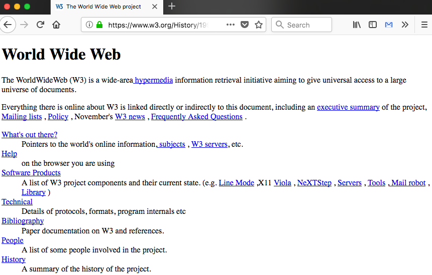
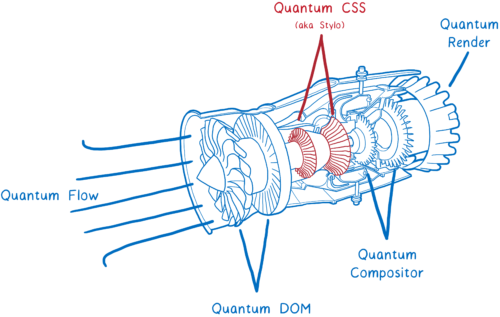

Rusty Firefox Quantum

Presentation by Attila Gal
2008
Table of Contents
- Browser history
- Firefox Quantum
- Rust
World's first webpage
Let's look at the Renderer
What does it do?


Conclusion
- Web gets more and more complex
-
Browsers optimize
- Coarse-grained parrallelism
- Fine-grained parrallelism
- Web Assembly
- Languages like Rust or Go, Elixir, Elm...